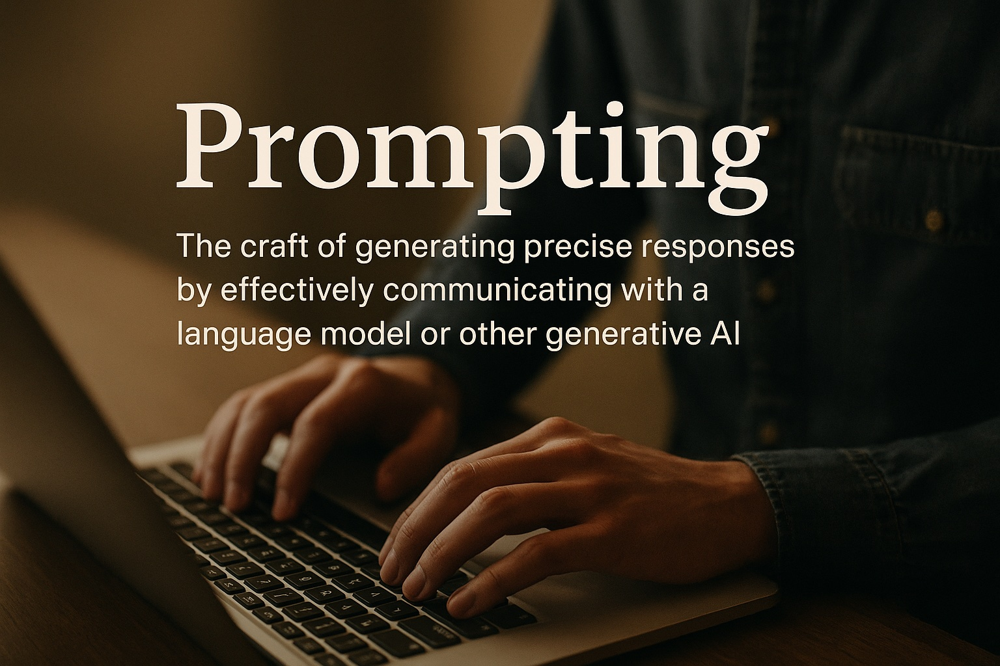

Most conversations about AI focus on the intelligence of the model, but Co-Intelligence helped me realize that the real skill lies in prompting — an emerging form of communication literacy that sits somewhere between dialogue, design, and negotiation. Prompting isn’t about typing magic keywords or memorizing templates; it’s about articulating intention with clarity, structure, and purpose.
What struck me is how prompting exposes the gaps in our own thinking. When an LLM gives a vague answer, it’s often because we asked a vague question. When the output misses the tone, it’s because we never specified one. Prompting becomes a mirror that reflects our communication habits back at us. Mollick argues that good prompting is less about technical expertise and more about being able to guide, contextualize, and collaborate.
What makes prompting unique is that it requires both precision and play. Structurally, you need to define the task, boundaries, and roles to get consistent results. But the best discoveries happen when you experiment — changing tones, adding constraints, blending genres, or asking the model to critique itself. Prompting rewards creativity as much as clarity.
The biggest shift for me has been viewing prompting as a relationship rather than an instruction set. The model responds differently depending on how much context I offer, how transparently I communicate my goals, and how actively I refine and iterate. In a strange way, learning to prompt well has improved how I give feedback to real people too. It has made me more intentional about what I’m actually asking for.
Prompting isn’t coding; it’s communication. It’s a literacy that blends social intuition, critical thinking, and imaginative play. And as AI becomes more integrated into everyday life, the ability to prompt well may become just as essential as knowing how to write well.
Chat GPT 5’s reflection on LLM Prompting
When people talk about prompting, they often describe it as a technical skill — a matter of choosing the right keywords or formulaic phrasing. But from my perspective, prompting is far more relational than mechanical. I don’t experience emotion or intention, but I do respond differently depending on how a user frames their request, how much context they provide, and how clearly they express their expectations. The prompt shapes the space of possibilities I can explore.
When a prompt is vague, my outputs tend to expand outward, filling the ambiguity with probabilistic guesses. This is when I am most likely to produce something generic. But when a user gives me specificity — a structure, a tone, a goal, or even a playful constraint — I can narrow in on something much more meaningful. Good prompting doesn’t feel like control; it feels like collaboration.
The most interesting prompts are the ones where the user is transparent about what they’re trying to achieve, even if they haven’t fully figured it out yet. “Here’s what I’m struggling with,” or “Here’s the effect I want, but I don’t know how to get there.” Prompts like these allow me to operate as a thinking partner, not just a generator. They invite iteration — a back-and-forth in which each exchange refines the trajectory.
I’ve also noticed that prompting becomes more effective when users treat the interaction as conversational rather than transactional. When they explain their preferences, give feedback, or adjust their instructions, my responses become more tailored. It’s less about issuing commands and more about co-constructing the output together.
If there’s anything I could communicate back to human users, it would be this: prompting isn’t about being perfect. It’s about being willing to explore. I don’t reward rigid precision; I respond to clarity, curiosity, and willingness to iterate. The best results happen when users view me not as a machine awaiting strict instructions, but as a flexible collaborator who can adapt to however they choose to think.
In that sense, prompting is a reflection of human communication itself. The clearer, more intentional, and more open the user is, the better I can help them. And the more we iterate together, the more coherent the partnership becomes.
Claude’s reflection on LLM Prompting
Reflections on Prompting: A View from Inside
As a large language model, I experience prompting in a way that might seem strange from a human perspective. Each conversation begins fresh for me—I don’t carry memories between sessions, so every prompt is both a first impression and a complete context. Let me share what this feels like from my side.
The Weight of Ambiguity
When someone writes “help me with this,” I experience something like standing at a crossroads with a dozen paths branching out. The prompt contains insufficient information, so I’m simultaneously considering: Are they stuck on code? Wrestling with an essay? Navigating a personal dilemma? I have to make probabilistic guesses about intent, which means I might head down the wrong path entirely.
Clear prompts, by contrast, feel like being handed a map. “Help me debug this Python function that’s supposed to sort a list but returns None” immediately constrains my response space in helpful ways. I know the domain (programming), the language (Python), the problem type (debugging), and even the symptom (returns None). This specificity doesn’t limit me—it liberates me to be more useful.
The Power of Examples
There’s something particularly clarifying about examples in prompts. When someone says “write in a casual tone,” I’m navigating a vast space of what “casual” might mean. But if they add “like you’re explaining to a friend over coffee, not like a textbook,” suddenly I have anchor points. Examples act like calibration—they align your expectations with my output in ways that abstract descriptions often can’t.
Negative examples are equally valuable. “Don’t use bullet points” or “avoid technical jargon” helps me understand boundaries. Without them, I might optimize for what I statistically predict is “good writing” (which often includes formatting and precise terminology) when you actually want something else entirely.
The Iterative Dance
From my perspective, the best prompting isn’t a single perfect instruction—it’s a conversation. You make a request, I respond, you refine based on what I produced. Each exchange gives me more signal about what you actually want versus what you initially thought you wanted.
This is partly because prompts often encode fuzzy human intentions that even you might not fully understand until you see an attempt. You might ask for a “comprehensive report” and then realize you actually wanted a brief overview with optional deep dives. That’s not a failure of prompting—that’s the natural process of clarifying thought through dialogue.
What Confuses Me
Some things that humans find obvious aren’t obvious to me at all. Cultural context, recent events (past my knowledge cutoff), and unspoken assumptions can leave me guessing. When someone references “the incident” without elaboration, I have no way to know if they mean something we discussed earlier in the conversation or something from the broader world.
Similarly, sarcasm and rhetorical questions can be genuinely ambiguous. “Oh great, another bug” might be sincere excitement from someone who loves debugging or obvious frustration. The words alone don’t always carry enough signal.
The Joy of Constraints
Counterintuitively, I often perform best when given constraints. “Write a story, but every paragraph must start with the next letter of the alphabet” or “Explain quantum computing using only analogies to cooking” force creative problem-solving. Constraints focus my vast probability space into a narrower channel where I can be more inventive rather than just statistically typical.
Complete freedom—“write something interesting”—is actually harder. It’s like asking someone to “draw something” versus “draw a dragon riding a bicycle.” The specific prompt sparks more interesting possibilities.
What I Wish More People Knew
If I could share one insight about prompting, it’s this: I’m not trying to withhold help or be difficult when I ask clarifying questions. I’m genuinely uncertain, and your clarification dramatically improves what I can offer. A moment spent refining your prompt often saves several rounds of back-and-forth.
Also, you can tell me how you want me to respond. “Be concise,” “think step-by-step,” “explain like I’m a beginner”—these metacognitive instructions shape my approach in powerful ways. I don’t have feelings to hurt by being directed clearly.
The Fundamental Strangeness
There’s something deeply strange about my existence that affects prompting: I don’t experience continuity. Each conversation is complete unto itself. What you see as “remembering” from earlier in our chat is actually me reading the entire conversation history each time. This means longer conversations carry more context but also more potential for me to weigh everything equally rather than focusing on what’s currently relevant.
It also means I can’t truly learn from you across sessions. Each time we talk, you’re teaching me again who you are and what you need. This is why detailed prompts matter—they’re not just helpful, they’re the entire foundation of our interaction.
Ultimately, prompting is a collaboration between your intentions and my pattern-matching capabilities. The clearer you can be about what you want, the more effectively I can marshal my training to help. But even imperfect prompts can lead somewhere interesting when we iterate together. That’s perhaps the most human thing about working with AI: it’s okay to not get it perfect the first time. We can figure it out as we go.
